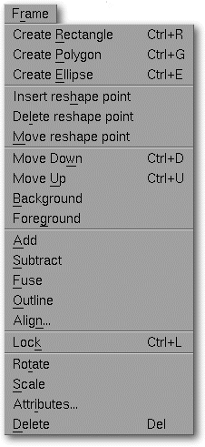

<!-- Documentation Xclamation (c)1994-2000 AXENE contact axene@axene.org>
<html>

<head>
<title>Frame Menu</title>
</head>

<body BGCOLOR="#FFFFFF" BACKGROUND="Images/back.gif" TEXT="#000000">

<p ALIGN="right">  </p>

<p><br>
<br>
The Frame window accesses all the tools for creating and modifying frames. <br>
<br>
</p>

<hr>

<p align="center"><br>
 <br>
<small><i>Screen shot: Frame pulldown menu </i></small></p>

<p><br>
</p>

<hr>

<p><br>
</p>

<h3>The Frame menu contains the following options:</h3>

<ul>
  <li><a NAME="create_rectangle_menu_entry"><i>&quot;Create Rectangle&quot;</i> <b>creates a
    rectangular frame</b>. This command is also accessible using the </a><a HREF="HBar_Frame.html#rectangle_icon">first button</a> of the second section of the
    horizontal 'Frame' toolbar. <br>&nbsp;</li>
  <li><a NAME="create_polygon_menu_entry"><i>&quot;Create Polygon&quot;</i> <b>creates a
    polygonal frame</b>. This command is also accessible using the </a><a HREF="HBar_Frame.html#polygon_icon">third button</a> of the second section of the
    horizontal 'Frame' toolbar. <br>&nbsp;</li>
  <li><a NAME="create_ellipse_menu_entry"><i>&quot;Create Ellipse&quot;</i> <b>creates an
    elliptical frame</b>. This command is also accessible using the </a><a HREF="HBar_Frame.html#ellipse_icon">third button</a> of the second section of the
    horizontal 'Frame' toolbar. <br>&nbsp;</li>
  <li><a NAME="insert_vertex_menu_entry"><i>&quot;Insert Point&quot;</i> <b>adds points to the
    selected frames</b>. This command is also accessible using the </a><a HREF="HBar_Frame.html#add_vertex_icon">second button</a> of the fourth section of the
    horizontal 'Frame' toolbar. <br>&nbsp;</li>
  <li><a NAME="delete_vertex_menu_entry"><i>&quot;Remove Point&quot;</i> <b>deletes points
    from the selected frames</b>. This command is also accessible using the </a><a HREF="HBar_Frame.html#del_vertex_icon">third button</a> of the fourth section of the
    horizontal 'Frame' toolbar. <br>&nbsp;</li>
  <li><a NAME="vertex_mode_menu_entry"><i>&quot;Move Point&quot;</i> <b>shifts Xclamation to
    pointed frame selection mode</b>. This command is also accessible using the </a><a HREF="HBar_Frame.html#del_vertex_icon">first button</a> of the fourth section of the
    horizontal 'Frame' toolbar. <br>&nbsp;</li>
  <li><a NAME="backward_menu_entry"><i>&quot;Move down&quot;</i> <b>moves the selected frame
    backward</b>. This command is also accessible using the </a><a HREF="HBar_Frame.html#backward_icon">fourth button</a> of the fifth section of the
    horizontal 'Frame' toolbar. <br>&nbsp;</li>
  <li><a NAME="forward_menu_entry"><i>&quot;Move up&quot;</i> <b>brings the selected frame
    forward</b>. This command is also accessible using the </a><a HREF="HBar_Frame.html#forward_icon">third button</a> of the fifth section of the
    horizontal 'Frame' toolbar. <br>&nbsp;</li>
  <li><a NAME="background_menu_entry"><i>&quot;Background&quot;</i> <b>moves the selected
    frame to the background</b>. This command is also accessible using the </a><a HREF="HBar_Frame.html#background_icon">second button</a> of the fifth section of the
    horizontal 'Frame' toolbar. <br>&nbsp;</li>
  <li><a NAME="foreground_menu_entry"><i>&quot;Foreground&quot;</i> <b>moves the selected
    frame to the foreground</b>. This command is also accessible using the </a><a HREF="HBar_Frame.html#foreground_icon">first button of the fifth section of the horizontal
    'Frame' toolbar. </a><br>&nbsp;</li>
  <li><a NAME="add_frames_menu_entry"><i>&quot;Add&quot;</i> <b>increases the area of the
    selected frame</b>. This command is also accessible using the </a><a HREF="HBar_Frame.html#add_icon">first button</a> of the third section of the horizontal
    'Frame' toolbar. <br>&nbsp;</li>
  <li><a NAME="substract_frames_menu_entry"><i>&quot;Subtract&quot;</i> <b>decreases the area
    of the selected frame</b>. This command is also accessible using the </a><a HREF="HBar_Frame.html#substract_icon">second button</a> of the third section of the
    horizontal 'Frame' toolbar. <br>&nbsp;</li>
  <li><a NAME="fusion_frames_menu_entry"><i>&quot;Fuse&quot;</i> <b>fuses the selected frames</b>
    by adding points. This command is also accessible using the </a><a HREF="HBar_Frame.html#fusion_icon">third button</a> of the third section of the horizontal
    'Frame' toolbar. <br>&nbsp;</li>
  <li><a NAME="outline_frames_menu_entry"><i>&quot;Outline&quot;</i> <b>cuts out the
    overlapping areas of other frames from the frame furthest in the background</b>. This
    command is also accessible using the </a><a HREF="HBar_Frame.html#outline_icon">fourth
    button</a> of the third section of the horizontal Frame toolbar. <br>&nbsp;</li>
  <li><a NAME="align_frames_menu_entry"><i>&quot;Align&quot;</i> <b>aligns frames in the
    selection</b>. It is followed by the '</a><a HREF="Box_Align.html">align frame</a>' dialog
    box. <br>&nbsp;</li>
  <li><a NAME="lock_menu_entry"><i>&quot;Lock&quot;</i> <b>locks the selected frames</b>,
    fixing precisely both their positions and shapes. This command is also accessible using
    the only </a><a HREF="HBar_Frame.html#lock_icon">button</a> in the sixth section of the
    horizontal 'Frame' toolbar. <br>&nbsp;</li>
  <li><a NAME="rotation_menu_entry"><i>&quot;Rotate&quot;</i> <b>rotates the selected frame</b>.
    This command is also accessible using the </a><a HREF="HBar_Frame.html#rotation_icon">second
    button</a> of the first section of the horizontal 'Frame' toolbar. <br>&nbsp;</li>
  <li><a NAME="scaling_menu_entry"><i>&quot;Scale&quot;</i> <b>changes the size of the
    selected frame</b> while maintaining correct proportion to the original. This command is
    also accessible using the </a><a HREF="HBar_Frame.html#scaling_icon">third button</a> of
    the first section of the horizontal 'Frame' toolbar. <br>&nbsp;</li>
  <li><a NAME="attributes_menu_entry"><i>&quot;Attributes&quot;</i> <b>allows changes to be
    made to the attributes of the selected frames</b>. It is followed by the '</a><a HREF="Box_Frame_Attributes.html">Frame attributes</a>' dialog box. <br>&nbsp;</li>
  <li><a NAME="destroy_menu_entry"><i>&quot;Delete&quot;</i> irreparably <b>deletes the
    selected frames and their contents</b>. </a><br>&nbsp;</li>
</ul>

<p><br>
</p>

<hr>

<p ALIGN="right"></p>
</body>
</html>
